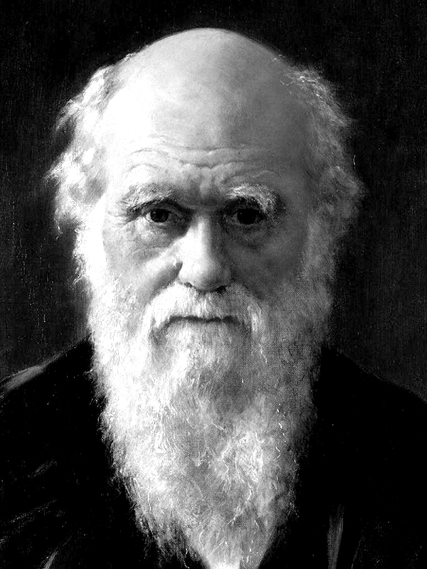
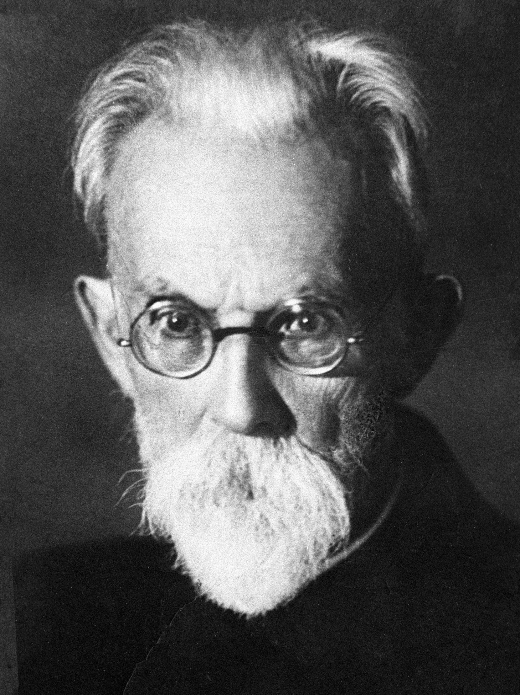
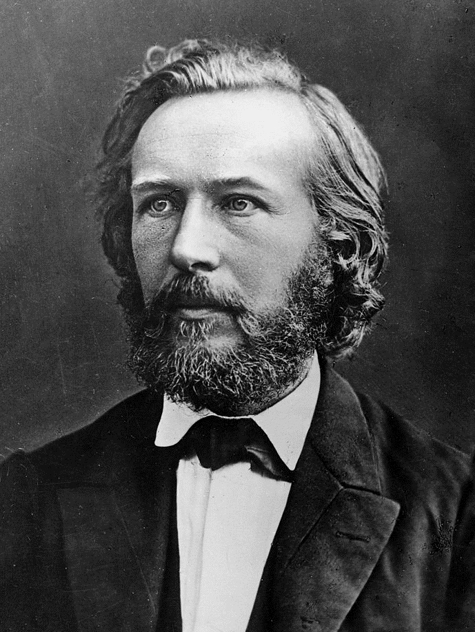
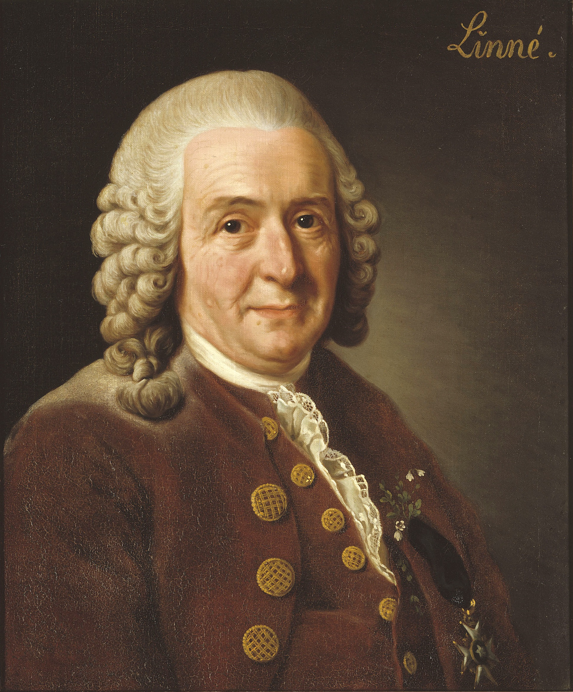

"Деякі з великих відкриттів, які посунули науку, можна назвати« легкими », проте не в тому сенсі, що їх легко було зробити, а в тому сенсі, що коли вони вже зроблені, їх легко зрозуміти кожному."

"Вся історія науки на кожному кроці показує, що окремі особистості були більш праві в своїх твердженнях, ніж цілі корпорації учених або сотні і тисячі дослідників, які дотримувалися панівних поглядів."

"З усіх воєн, які народи вели між собою вогнем і мечем, релігійні були найбільш кровопролитними."

„З допомогою мистецтва природа творить дива.“